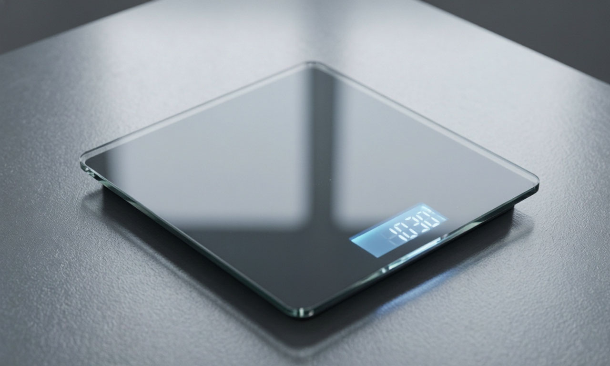

← На главную
⚖️ Калькулятор ИМТ
Узнай свой индекс массы тела с учетом возраста.

Твой вес (кг)
Твой рост (см)
Твой возраст (лет)
Для людей старше 65 лет нормы ИМТ могут быть выше (до 27-29).
Рассчитать ИМТ
0.0
Введите данные
Идеальный вес: -- кг
Совет:
С возрастом мышечная масса уменьшается, поэтому небольшой избыток веса после 60 лет может быть нормой.